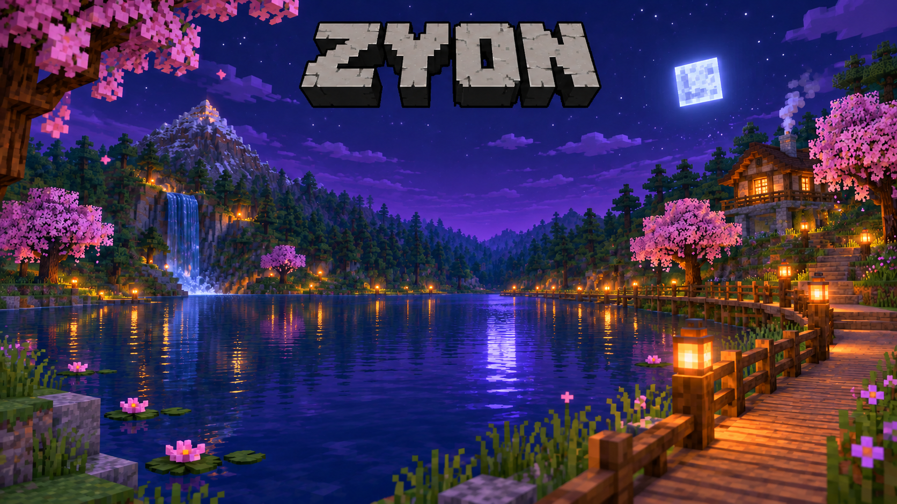

Jogue com o seu nick
Escolha um nome e use Play offline, sem login Microsoft, em mundos locais e servidores que aceitam jogadores sem autenticação.

Seu nick. Seus módulos. Seu mundo.
Um launcher com identidade própria e cada detalhe sob seu controle.
Windows 10 / 11 · 64 bits / Download pelo GitHub
O Zyon reúne instalação, personalização e acesso ao Minecraft em uma experiência para chamar de sua.
Veja como começarEscolha um nome e use Play offline, sem login Microsoft, em mundos locais e servidores que aceitam jogadores sem autenticação.
Ajuste módulos, atalhos, cores e HUD. Salve seus estilos em perfis e volte à sua configuração quando quiser.
Seus mundos, mods e configurações ficam na pasta do Zyon. O launcher prepara Forge, Java 8, bibliotecas e recursos para o jogo.
Quando uma versão é publicada no GitHub, o Zyon verifica e oferece a atualização. Você escolhe quando instalar.
Do primeiro Play ao menu do jogo,
o Zyon tem sua própria identidade.

Arraste os keystrokes para onde preferir. Mude tamanho, cor e transparência. Exiba movimento, pulo, botões do mouse e cliques por segundo.
Ou use Ctrl direito para abrir o editor. No jogo, a posição e o estilo ficam salvos nos seus perfis.
Violeta, azul, ciano, verde, rosa ou laranja. Ajuste a opacidade, ative cores animadas e escolha se quer usar o menu inicial Zyon.
Experimente arrastar o painel ou clicar nas teclas do mouse. Prévia ilustrativa; configure o HUD real dentro do Minecraft.
Importe o OptiFine 1.8.9 HD U M5 pela aba Instalação do launcher. O zoom usa C por padrão, e a tecla pode ser alterada nos controles do Minecraft.
O JAR é baixado por você no site oficial e não acompanha o instalador Zyon. Para a capa, é necessário ter uma capa OptiFine ativa vinculada ao seu nome de jogador.
Conhecer o OptiFineCombate, movimento, visual, jogador e interface.
Explore o que cada módulo faz e pode ajustar.
19 módulos disponíveis
Ataca um alvo por intervalo dentro do alcance e campo de visão configurados.
Alcance, ataques por segundo, campo de visão, tipos de alvo, invisíveis, paredes, rotação, exigência de arma e prioridade por distância ou vida.
Ataca a entidade que está na mira, usando os filtros de alvo do KillAura.
Ataques por segundo, alcance e exigência de arma.
Repete ataques enquanto você segura o botão esquerdo, sem automatizar a mineração.
Cliques por segundo e exigência de arma.
Ajusta a mira ao segurar o botão esquerdo do mouse.
Alcance, campo de visão, graus de ajuste por tick e exigência de arma.
Mantém a corrida ao andar, respeitando as condições do jogador.
Ativação, atalho e opção de correr em todas as direções.
Controla o movimento horizontal e vertical. Espaço sobe; agachar desce.
Velocidade horizontal e vertical. O servidor pode limitar ou impedir o movimento.
Ajusta a velocidade horizontal e oferece bunny hop opcional.
Blocos por tick, bunny hop, ativação e atalho.
Ajusta a altura de subida em blocos e restaura o valor ao desligar.
Altura de subida, ativação e atalho.
Pula automaticamente ao andar no chão.
Ativação e atalho pelo menu do cliente.
Agacha perto de bordas sem apoio para ajudar no movimento.
Distância de antecipação da borda, ativação e atalho.
Aumenta o brilho do jogo e restaura o valor anterior ao desligar.
Intensidade do brilho, ativação e atalho.
Desenha caixas em entidades que estão carregadas no mundo.
Jogadores, monstros, animais, visão através de paredes, distância máxima e espessura das linhas.
Desenha linhas da câmera até entidades carregadas no mundo.
Tipos de entidade, visão através de paredes, distância máxima, ativação e atalho.
Exibe uma mira colorida sobre a mira padrão do Minecraft.
Tamanho, espaço central, ponto central e cor do tema.
Seleciona a ferramenta mais rápida disponível na hotbar.
Restauração do slot ao soltar, ativação e atalho.
Usa alimentos da hotbar quando a fome fica abaixo do limite escolhido.
Limite de fome, ativação e atalho.
Reduz o intervalo local de colocação de blocos.
Intervalo em ticks, ativação e atalho. A aceitação das ações depende do servidor.
Reúne a marca Zyon, FPS, coordenadas, alvo e módulos ativos na tela.
Exibição de ícone, FPS, coordenadas, módulos e alvo, além das margens X e Y.
Exibe teclas, botões do mouse, pulo e cliques por segundo em um painel arrastável.
Posição, escala, cor ao pressionar, transparência, mouse, CPS e pulo. O layout é salvo nos perfis.
Tente outro nome ou escolha uma categoria diferente.
As ações e movimentos aceitos dependem do servidor. Confira as regras de onde você joga.
Baixe a versão mais recente para Windows 10 ou 11, 64 bits. Feche o Zyon e o Minecraft antes de instalar uma atualização.
Na aba Instalação, clique em Preparar Minecraft ou Verificar arquivos. O launcher prepara Forge, Java 8 e os recursos necessários. A primeira preparação precisa de internet.
Abra Minha conta, digite um nick de 3 a 16 letras, números ou _, e clique em Usar este nick. Depois, use Play offline para mundos locais ou servidores sem autenticação.
Quer usar uma conta original? O modo Microsoft fica separado em Minha conta. Ele exige uma conta com acesso ao Java e a aprovação do aplicativo para as APIs do Minecraft, que ainda não foi confirmada. O modo offline não depende dessa aprovação.
Zyon Launcher para Windows. Seu jogo, sua configuração.
As versões e o instalador são publicados no GitHub.
O que você precisa saber para começar com o Zyon.
Relatar um problema no GitHubNão para o modo offline. Você escolhe um nick e pode abrir mundos locais e servidores que aceitam jogadores sem autenticação. Servidores com autenticação exigem uma conta original. O modo Microsoft é opcional e sua aprovação e funcionamento real ainda não foram confirmados.
A primeira preparação precisa de internet para baixar os arquivos do Minecraft, Forge, Java e recursos. Com os arquivos completos, o modo offline abre mundos locais sem login Microsoft. Para entrar em servidores e usar serviços externos, é necessária conexão.
No jogo, use Shift direito → Editar HUD, ou Ctrl direito. Arraste o painel com o botão esquerdo e solte para salvar. Em Interface → Keystrokes, ajuste tamanho, cor, transparência, botões do mouse, CPS e pulo. O layout fica salvo nos seus perfis.
Não. Baixe o OptiFine 1.8.9 HD U M5 no site oficial e use Instalação → Importar OptiFine .jar, com o jogo fechado. O Zyon evita JARs duplicados e pode mover a instalação feita por ele para backup. A capa exige uma capa OptiFine ativa no seu nome; skins e capas não são garantidas pelo modo offline.
O instalador preserva mundos e configurações em AppData. Ao verificar os arquivos, o launcher move versões anteriores do mod Zyon para a pasta zyon-backups da instância, evitando dois clientes ao mesmo tempo. Faça suas próprias cópias dos mundos importantes.
O Zyon prepara uma instância própria com Forge 1.8.9. Os mods do LabyMod não são importados automaticamente. Outros mods precisam ser compatíveis com essa versão e com os mods instalados. O Zyon é um projeto independente do LabyMod.
Sim. O nome, incluindo maiúsculas e minúsculas, determina sua identidade offline. Trocar o nick ou alternar para uma identidade Microsoft pode mudar o inventário e o progresso associados ao jogador em servidores. Mantenha o mesmo nick para continuar com a mesma identidade offline.
Feche o jogo e use Preparar Minecraft / Verificar arquivos. O launcher oferece Abrir registros; os arquivos launcher.log e game.log ficam em %APPDATA%\ZyonLauncher, e logs/latest.log fica dentro da instância. Ao relatar um erro no GitHub, descreva o que aconteceu e remova informações pessoais dos registros.
O instalador atual não possui assinatura digital de editor. Confira se o download veio das releases de Favelado157/zyon-launcher no GitHub. O arquivo SHA256SUMS.txt acompanha cada publicação para verificar o instalador.